Wara Tech · Doc de produto · Hidráulica
Yara: hidráulica e processo
As linhas, os componentes e a lavagem das UFs da Yara, o que aconteceu no campo, as divergências entre fontes e o que segue em aberto. Pressão de corte, sensores, elétrica e firmware estão nas páginas Elétrica e Firmware.
Como ler os dados
01Configurações
Três configurações
A montagem original, a de hoje e a do piloto.
A água passa por uma bomba e segue por duas linhas em paralelo, cada uma com pré-filtro e UF. A água tratada vai direto ao bebedouro com boia, sem reservatório intermediário.
Configuração 1
Montagem original (projeto)
Duas linhas iguais, cada uma com filtro de mídia e UF. Tanque de cloro com bomba 2 dosando no misturador antes do bebedouro.
Configuração 2 · hoje
Montagem de 03/10/2026
Linha 1: disco + UF.
Linha 2: mídia + válvula de 3 vias + disco + UF.
Válvula de retenção de 3/4" na entrada, uma para as duas linhas.
Nota: Essa configuração vai ser alterada para o piloto, de acordo com as recomendações do consultor de tratamento de água (Gabriel Poydo). Fonte: Rodrigo, 14/10/2026.
Configuração 3 · piloto
Trem do piloto
A definir com o Gabriel Poydo.
A definir
Deslize o diagrama para o lado →
Redesenhada por nós a partir do esquema de processo fornecido pelo David. Só a parte hidráulica: captação, filtro da bomba e bomba 1; duas linhas, cada uma com entrada, filtro de mídia (com dreno), filtro UF (com descarte) e saída, ligadas por uma interligação; retorno à sucção da bomba 1; bypass; saída tratada, misturador com tanque de cloro e bomba 2, e bebedouro. Não representa a máquina hoje. Divergências: D2 D3.
Configuração 2 · Hoje (montagem de 03/10/2026)
RelatoNota
Esta é a Yara como está instalada na fazenda. Essa configuração vai ser alterada para o piloto, de acordo com as recomendações do consultor de tratamento de água (Gabriel Poydo). Fonte: Rodrigo, 14/10/2026.
Deslize o diagrama para o lado →
Mesma base da configuração 1, com três mudanças: filtro de disco no lugar do filtro de mídia na linha 1; na linha 2, válvula de 3 vias e filtro de disco entre a mídia e a UF; válvula de retenção (VR) de 3/4" depois da bomba, uma para as duas linhas (Manu, 13/10/2026). Na linha 2, a válvula de 3 vias manda para o esgoto a água que sai suja da mídia. Composição segundo o Google Doc de dúvidas e o vídeo da montagem de 03/10/2026; o restante segue o projeto original e será conferido na volta da máquina à PUC.
Configuração 3 · Piloto
A definirO trem de tratamento do piloto está a definir com o Gabriel Poydo. Em 05/10/2026, o caminho considerado mais seguro pela equipe foi disco + membrana, sem filtro de mídia. As recomendações já registradas estão em Dúvidas em aberto.
Fontes: esquema de processo do David; Google Doc “Yara: dúvidas de filtragem (v2)”; vídeo da montagem de 03/10/2026; histórico de campo v2 (09/10/2026); Manu, 13/10/2026; retrolavagem cruzada descartada e tanque de cloro: Rodrigo, 14/10/2026.
02Componentes
Componentes
O que está instalado, peça por peça.
| Componente | O que sabemos | Tipo do dado |
|---|---|---|
| Água de entrada no teste | Teste anterior em outra fazenda, não a do piloto, com água de concessionária numa caixa d'água de ~1.000 L; qualidade dessa água não medida. Nas fazendas-alvo, a água bruta vem de reservatórios grandes, normalmente de geomembrana. | Relato |
| Bomba | Dancor AP3C, ~1 CV. Vazão nominal registrada como “da ordem de 2.000–3.000 L/h” ou 3.000 L/h, conforme o trecho da fonte. Entrega medida com balde: ~1.500 a 1.700 L/h (erro < 100 L/h). | Medido D6 |
| Vaso de mídia | VITTAX 1465-4, PRFV 14" × 65", boca de 4". Etiqueta: 150 psi (1,0 MPa) máx., 1 a 49 °C, vácuo máx. 127 mmHg. Loja Era (NEA36): 147 L; 10 bar máx.; operação recomendada de 1 a 4 bar; vazão padrão 2,5 m³/h; retrolavagem recomendada 3 a 4 m³/h. Vaso cerca de 70% cheio (Manu, 13/10/2026). | Fabricante |
| Mídia (por vaso) | De baixo para cima: areia grossa (25 kg), areia média (25 kg) e antracito (2 × 25 kg). Granulometria e altura das camadas não constam na nota fiscal. | Fabricante |
| Válvula do vaso | Runxin F56A1, manual, multivias (serviço, retrolavagem, enxágue rápido), até 4 m³/h. Fabricante: tanques de 6" a 12", 1,5 a 6 bar, 5 a 50 °C, turbidez de entrada < 20 FTU. Sem manual em mãos. | Fabricante D4 |
| Crepinas e tubo central | Crepina superior JD211 e inferior JD212, 3/4", ranhura 0,25 a 0,30 mm, para tanques de 6" a 12". Tubo central de 3/4" (25 mm), para tanques de 6" a 13". O tubo é rígido, tem comprimento próprio para o vaso e chega ao fundo (Manu, 13/10/2026). | Fabricante |
| Acessórios do vaso | Quebra-vácuo Small UM1 (nota fiscal), peça original que veio com os filtros: não foi instalado. Reduzia de 1" para 1/2", e o Manu avaliou que daria perda de carga demais; ao desmontar, viu que era uma válvula de retenção (unidirecional). No lugar, instalou uma válvula de retenção equivalente, de 3/4", na entrada, entre a bomba e os filtros, uma só para as duas linhas (Manu, 13/10/2026). Redução N9903-A de 4" para 2,5" (boca do tanque para a base da válvula). A válvula de alívio saiu do pedido. | Fabricante Relato |
| Filtro de disco (um por linha) | Irritec YDV “Modelo D” 3/4", 120 mesh (~130 µm), código IFYDVCDLM2C0N, discos vermelhos. Vazão máx. recomendada 5 m³/h; área filtrante 170 cm²; corpo e discos de polipropileno; vedação NBR. A família YDV vai até 200 mesh (~80 µm). | Fabricante D5 |
| UF (uma por linha) | Vazão nominal ~3.000 L/h. As mesmas que o Rodrigo sempre usou na Água Camelo; modelo e fabricante não registrados. Área e material da membrana desconhecidos. Carcaça inox; cabeçote com O-ring, fechado por abraçadeira. Os datasheets recebidos da Era Ambiental (Kleber) não são das UFs instaladas: servem só como referência das membranas que o fornecedor tem disponíveis. | Relato Desconhecido |
| Válvulas da linha | Válvulas de esfera motorizadas de 3/4", de 2 vias, em quantidade a confirmar (o desenho elétrico só nomeia as válvulas 1 a 4) (posições no P&ID; funções no mapa abaixo). O P&ID mostra também válvulas manuais em série com as motorizadas. Válvula de 3 vias STK2012T DN20 3/4" a jusante da mídia, instalada em 02–03/10/2026. Válvula de retenção de 3/4" na entrada, entre a bomba e os filtros, uma só para as duas linhas (Manu, 13/10/2026). | Relato |
| Proteção de pressão | Não há válvula de alívio mecânica. Pressão de corte da bomba e sensores de pressão: ver Firmware e Elétrica. | Relato D9 |
| Retrolavagem | Em campo, a retrolavagem foi feita à mão; o gatilho automático está em Firmware. | Relato D10 |
| Saída | Direto ao bebedouro, com boia mecânica de 3/4" de alta vazão, sem tanque. Quando a boia fecha, a pressão sobe e a máquina para. O religamento depois que a boia fecha não está definido. | Relato |
| Cloro | Tanque de cloro (PE, 60 L) com a bomba 2 (dosadora), instalados; a dosadora nunca foi testada em campo. Nota de engenharia de 04/10/2026: não dosar cloro de forma contínua no piloto. Era uma posição anterior da Wara. A recomendação do Gabriel Poydo (call de 07/10/2026) prevalece: o cloro pode ser dosado antes da membrana, por motivo de processo, e é retirado antes de a água ir ao gado. | Relato |
| Manômetros | Genebre 63 mm (0 a 10 bar) e manômetro de 300 psi com glicerina, 1/4". O P&ID tem 5 pontos de indicação de pressão (PI): descarga da Bomba 1, saída de cada filtro de mídia, linha de retorno da válvula 11 e saída das UFs. | Fabricante Relato |
Fontes: Google Doc “Yara: dúvidas de filtragem (v2)”; histórico de campo v2; notas fiscais da Era Ambiental (jul/2026, sem preços); identificação do filtro de disco (09/10/2026); fotos das etiquetas; cloro: nota de engenharia de 04/10/2026 e call de 07/10/2026; retrolavagem cruzada descartada: Rodrigo, 14/10/2026.
Mapa das válvulas (estado de 29/09/2026)
| Válvula | Função | Grupo |
|---|---|---|
| 0 | Saída para o bebedouro | Saída |
| 5 | Entrada da mídia 1 | Linha 1 |
| 13 | Esgoto da mídia 1 | Linha 1 |
| 4 | Esgoto da UF 1 | Linha 1 |
| 2 | Saída da UF 1 | Linha 1 |
| 6 | Entrada da mídia 2 | Linha 2 |
| 15 | Esgoto da mídia 2 | Linha 2 |
| 7 | Esgoto da UF 2 | Linha 2 |
| 9 | Saída da UF 2 | Linha 2 |
| 8 | Ligação entre as linhas depois das mídias | Entre linhas |
| 11 | Volta do concentrado das UFs para a linha | Entre linhas |
| 3 | Bypass (sem filtração) | Bypass |
Fonte: mapa informado pelo Rodrigo em 29/09/2026. Mostra o estado antes das mudanças de 02–03/10 (válvula de 3 vias e filtro de disco).
Fotos da máquina
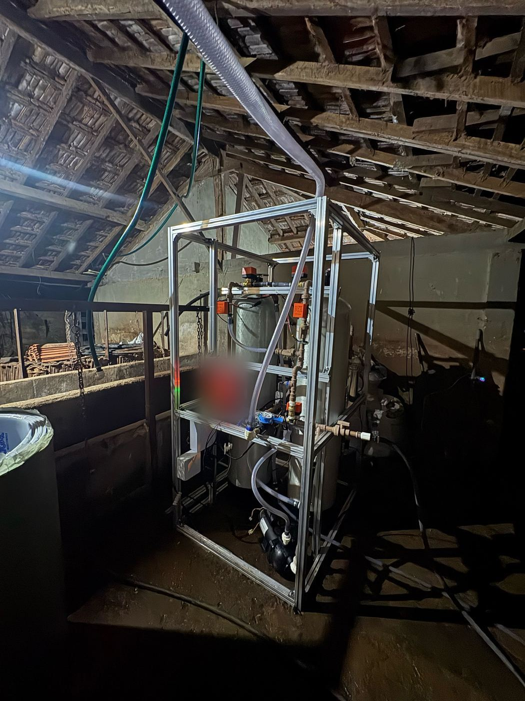
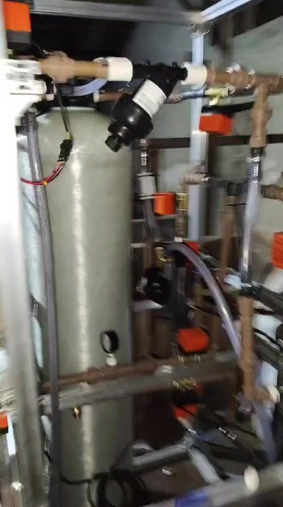
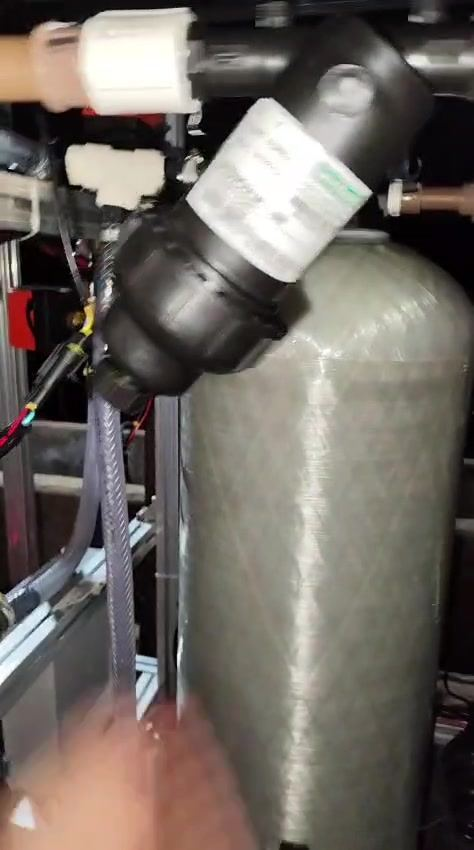
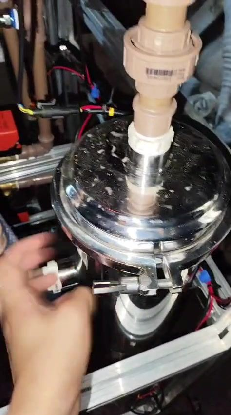
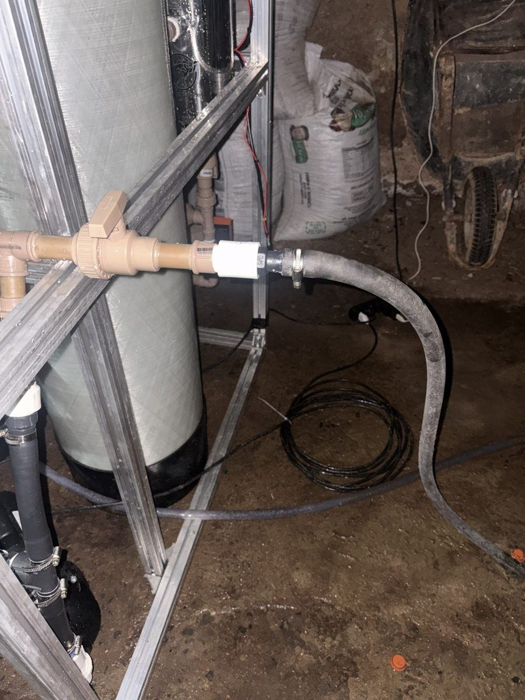
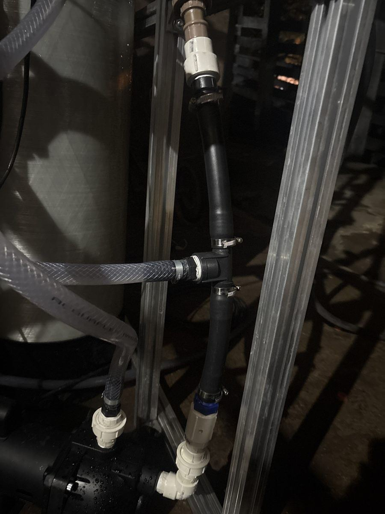
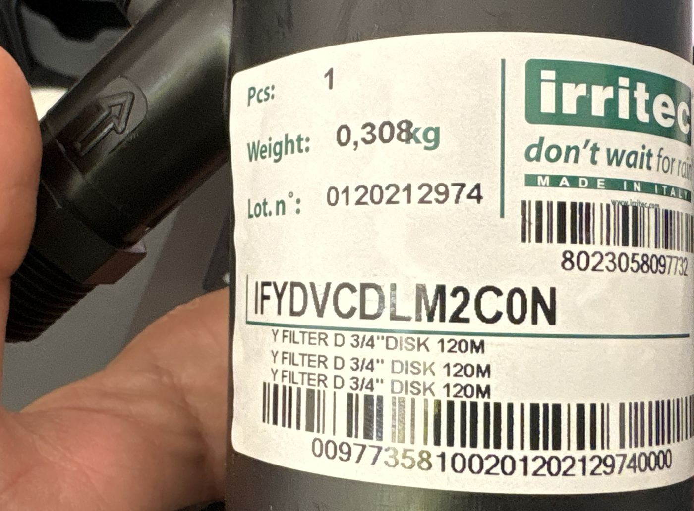
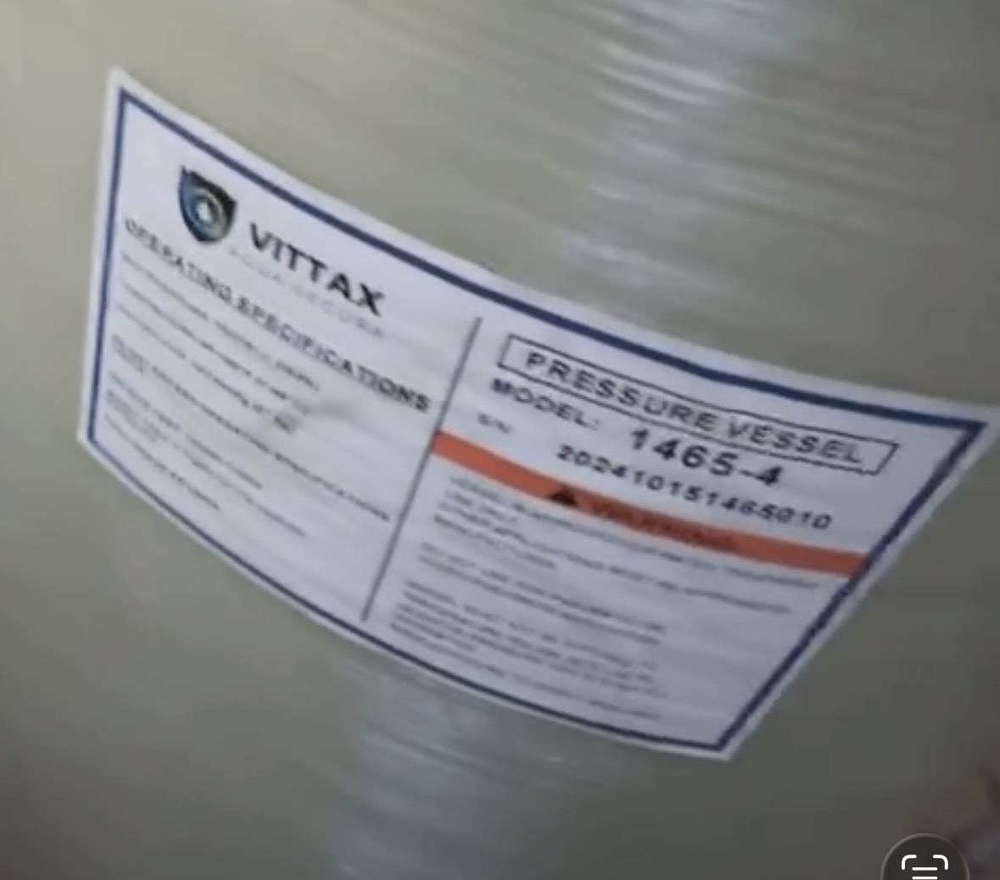
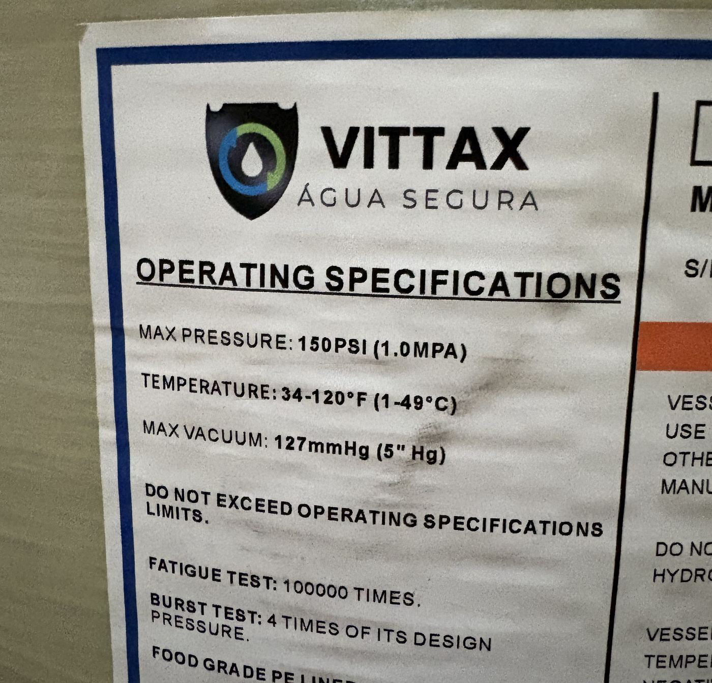
Fotos de catálogo, não são as peças instaladas. Não há foto real das crepinas nem da mídia. Estas imagens são da loja que vendeu os itens das notas fiscais (Era Ambiental), do mesmo modelo.
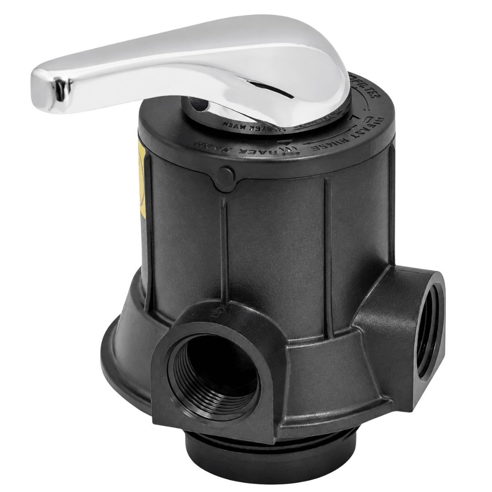
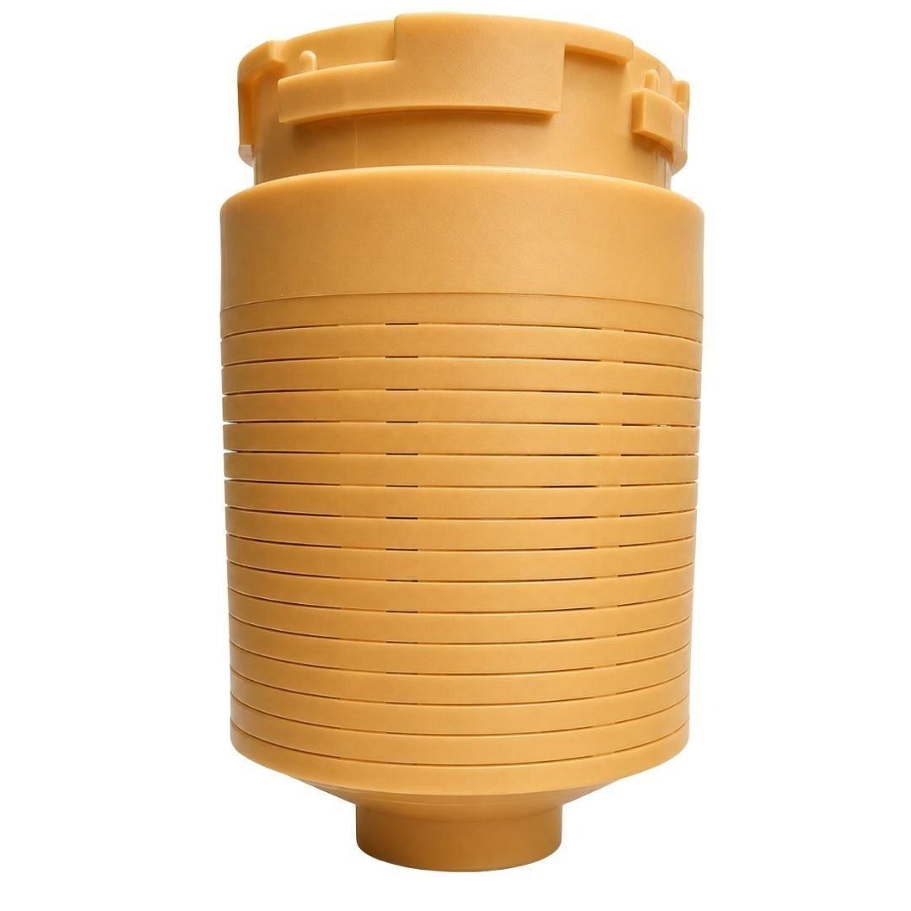
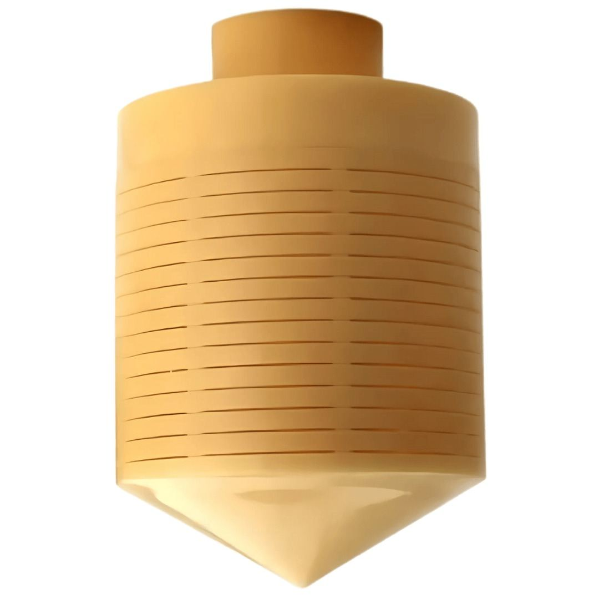
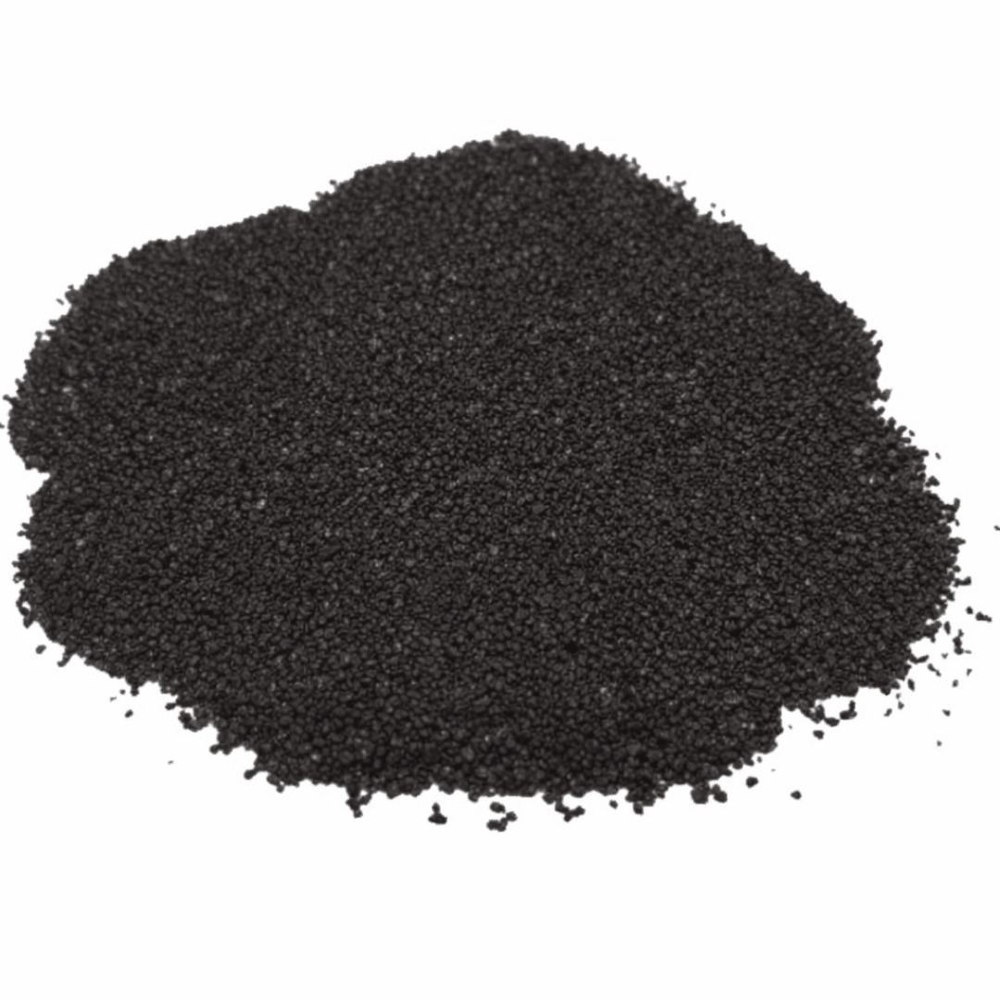
03Lavagem das UFs
Lavagem das UFs
Como as UFs foram limpas e o que está registrado como recomendação.
- 13–27/09/2026
- Limpeza das UFs em campo: uma UF foi de ~400 para ~1.400–1.600 L/h; a outra chegou a ~1.200–1.300 L/h e caiu para menos de 300 L/h. Aproximado
- 03–04/10/2026
- UF lavada à mão com água corrente e desentupida por retrolavagem improvisada (mangueira, pressão da caixa, água bruta), sem química: ~200 → ~1.000 L/h. Aproximado
- 07/10/2026
- A UF desentupida colmatou de novo, com só o disco a montante: “bloqueio severo”. Relato D11
- Retrolavagem automática
- Nunca disparou em campo; todas as retrolavagens foram manuais. O gatilho está em Firmware.
Recomendações registradas do Gabriel Poydo (call de 07/10/2026)
- CEBLimpeza diária, de ~15 min, automática, com hipoclorito de sódio.
- CIPA cada 45 a 60 dias, de algumas horas, com hipoclorito, ácido cítrico e soda.
- Água da retrolavagemA pressão disponível é insuficiente para uma retrolavagem adequada. Solução proposta: reservatório de água limpa de ~1.500 a 2.000 L para a retrolavagem.
- Cloro antes da UFMembranas de UF são compatíveis com cloro; dosar hipoclorito na entrada da membrana evita biofouling. O cloro residual sai antes do gado, por filtro de carvão depois da membrana ou bissulfito de sódio.
Fontes: histórico de campo da Yara v2 (09/10/2026); levantamento de problemas de 04/10/2026; call com o Gabriel Poydo de 07/10/2026.
04Campo
O que aconteceu no campo
Linha do tempo da máquina de campo no teste anterior, em outra fazenda, com água de concessionária (qualidade não medida), com a visita de 02 a 04/10/2026 em destaque, e os problemas observados.
Medido D6
Relato pressão: ver Firmware
Aproximado
Relato
Antes da visita
- Jul2026
Montagem dos vasos de mídia
- Feito
- VITTAX 1465-4 (14" × 65"), válvula manual Runxin F56A1, crepinas JD211/JD212. Camadas, de baixo para cima: areia grossa, areia média, antracito.
- Observado
- Vaso cerca de 70% cheio (Manu, 13/10/2026).
- 13–27/092026
Janela de campo: duas linhas iguais (mídia → UF)
- Feito
- Bomba ~1 CV, válvulas motorizadas (quantidade a confirmar), alimentação por caixa d'água de ~1.000 L, com água de concessionária. Limpeza das UFs.
- Observado
- UFs sujas; com a limpeza, a vazão subiu. Uma UF foi de ~400 para ~1.400–1.600 L/h com a limpeza; a outra chegou a ~1.200–1.300 L/h e caiu para menos de 300 L/h. A UF ficou “muito preta”. O pico ao ligar “quase estourou a vedação dos vasos de mídia”. Leitura de 7,46 bar na UF2. A sucção colapsava com mangueira fraca. A caixa d'água acabou e limitou os testes.
- 28/092026
Teste de pressão
- Observado
- 2 bar estático; 1,8 bar pela mídia; 4 bar ao fechar válvulas, e a bomba desligou. Suspeita de mídia entupida.
- Decidido
- Cada linha testaria uma alternativa: L1 mídia → 3 vias → UF1 e L2 disco → UF2. O que foi montado em 03/10 foi diferente (configuração 2). Limpar as UFs de 3.000 L/h. Entrega por boia mecânica, com parada pela pressão; religamento indefinido.
Visita de campo · 02 a 04/10/2026
- 02/10sex
Chegada
- Observado
- Mídia de uma linha “totalmente preta” e as duas UFs entupidas.
- 03/10sáb
Mudança das linhas
- Feito
- Um vaso de mídia trocado por filtro de disco. Instaladas a válvula de 3 vias e a boia no bebedouro. Vídeo da montagem: L1 = disco → UF1; L2 = mídia → 3 vias → disco → UF2. Disco Irritec YDV 3/4" 120 mesh (~130 µm), um por linha.
- Decidido
- Plano B com UFs de 1.000 L/h descartado (conexão de 1/2" contra linha de 3/4").
- 03–04/10
Lavagens
- Feito
- UF lavada à mão com água corrente e desentupida por retrolavagem improvisada (mangueira, pressão da caixa, água bruta): ~200 → ~1.000 L/h, sem química. Retrolavagens feitas à mão. Mídia lavada inúmeras vezes, inclusive ~20 min de retrolavagem.
- Observado
- A mídia seguiu “sujando a água”. No balde, a água depois da mídia estava mais suja que a de entrada; depois do disco, sem melhora visível. Disco com pouca perda de carga. A caixa esvaziou e veio água do fundo com partículas grandes.
- 04/10dom
Fim da visita
- Feito
- O-ring da cabeça da UF achado montado errado e remontado; o vazamento parou D1.
- Observado
- Sem vazão, o que impediu testes. Segundo o Manu (call de 05/10), com a chuva forte o bebedouro provavelmente ficou cheio e manteve a boia fechada. Ao ligar: pressão alta quase na hora e vazamento na cabeça da UF pressão: ver Firmware.
Depois da visita
- 05/10seg
Medição da bomba
- Observado
- Vazão aferida com balde (erro < 100 L/h): ~1.500–1.700 L/h. Sem bomba, a caixa dava ~500–600 L/h. Causa não testada.
- Decidido
- Caminho considerado mais seguro: disco + membrana, sem filtro de mídia; procurar discos em cascata. Trazer a máquina para a PUC. Válvula de alívio de 6 bar D9. Depois, a válvula de alívio saiu do pedido (ver tabela de componentes).
- 06/10ter
Teste com o responsável local
- Feito
- Vazamento da UF: teflon; depois, abraçadeira desmontada e remontada com mais aperto, e o vazamento parou.
- Observado
- Bomba desarmando por sobrepressão em < 2 s ao atingir o corte (4 bar, decidido em 13/10/2026) pressão: ver Firmware. Vazão zero com as duas linhas abertas: a válvula 0 (saída final) “fechava mas não abria”. Enchimento só pelo bypass. UF vazando de novo. Retrolavagem automática não acionou (limite de 8 bar, “alto de propósito”).
- Decidido
- Operar só em bypass e retirar a máquina o quanto antes.
- 07/10qua
Teste só com a coluna d'água (~2 bar)
- Observado
- Vazão “muito baixa”. A UF desentupida colmatou de novo, com só o disco a montante. UF em “bloqueio severo” D11. A linha com mídia, 3 vias e disco a jusante não resolveu.
- Decidido
- 2ª válvula em paralelo à válvula 0. Início do piloto em dezembro de 2026 ou janeiro de 2027 (a Wara está tentando janeiro). Descartada a retrolavagem entre linhas com a mesma água, salvo com duas bombas ou fonte limpa D10. Pedidas fotos da crepina.
- 08/10qui
Retirada
- Decidido
- Retirar a Yara sem novos testes.
- 09/10sex
Call com o Gabriel
- Decidido
- Pedir à Era Ambiental a documentação das membranas que ela tem disponíveis, só para conhecer as opções (não são as membranas instaladas na Yara). Sem teste de bancada.
- 19/10seg
Chegada da Yara à PUC (Rodrigo, 14/10/2026)
- Previsto
- Conferir a composição das linhas.
Fonte: histórico de campo da Yara v2 (09/10/2026, reformatado em 12/10), que cita as calls de 28/09 a 09/10, o vídeo de 03/10 e o Google Doc de dúvidas; levantamento de problemas de 04/10/2026 (itens de 13–27/09).
Problemas observados
| # | Problema | O que se viu | Situação |
|---|---|---|---|
| P1 | Mídia escureceu a água | Água preta saindo do filtro de mídia, mais suja que a de entrada, mesmo depois de inúmeras lavagens e ~20 min de retrolavagem. O antracito chegou à UF. Os vasos foram transportados cheios, com mídia e água (4 h de carro). | Causa não confirmada; ver dúvidas em aberto |
| P2 | UF colmatada | Duas vezes: com antracito vindo da mídia e com só o disco a montante. Recuperou de ~200 para ~1.000 L/h e entupiu de novo. | Sem datasheet da UF instalada; recuperação incerta D11 |
| P3 | Disco sem efeito visível | Pouca perda de carga; sem melhora visível de turbidez no balde. | Sem curva do disco sujo |
| P4 | Sobrepressão e desarme | Desarme em < 2 s ao atingir o corte, quase na hora ao ligar; 7,46 bar na UF2 (set.); pico ao ligar que quase estourou a vedação dos vasos. | Corte de 4 bar, decidido em 13/10/2026 pressão: ver Firmware |
| P5 | Vazamento no cabeçote da UF | Vazou ao ligar. Parou ao remontar o O-ring, voltou, parou de novo com a abraçadeira remontada com mais aperto. | Causa em aberto D1 |
| P6 | Bomba abaixo do nominal | ~1.500–1.700 L/h medidos contra 2.000–3.000 ou 3.000 L/h nominais, conforme a fonte. | Gargalo não testado D6 |
| P7 | Válvula de saída travada | A válvula 0 “fechava mas não abria”: vazão zero com as duas linhas abertas. | Decidida 2ª válvula em paralelo |
| P8 | Boia fechada | Relato do Manu (call de 05/10): com a chuva forte, o bebedouro provavelmente ficou cheio e manteve a boia fechada, e por isso não havia vazão. Relato | Religamento depois que a boia fecha não definido |
| P9 | Caixa d'água esvaziou | Veio água do fundo com partículas grandes; a falta de água limitou os testes. | Captação em reservatório: dúvidas em aberto |
| P10 | Retrolavagem automática não disparou | Limite de diferencial de pressão em 8 bar, “alto de propósito”. Todas as retrolavagens foram manuais. | Gatilho em aberto |
| P11 | Sucção colapsava | Com mangueira fraca, a sucção colapsava por vácuo. | Trocada por mangueira com lona interna ou tubo rígido |
Fibras de UF com antracito
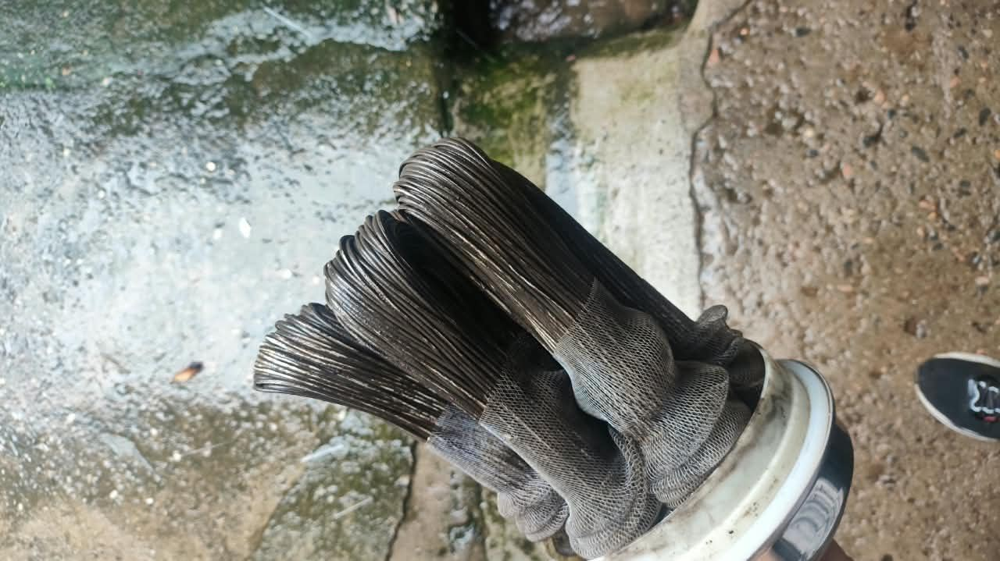
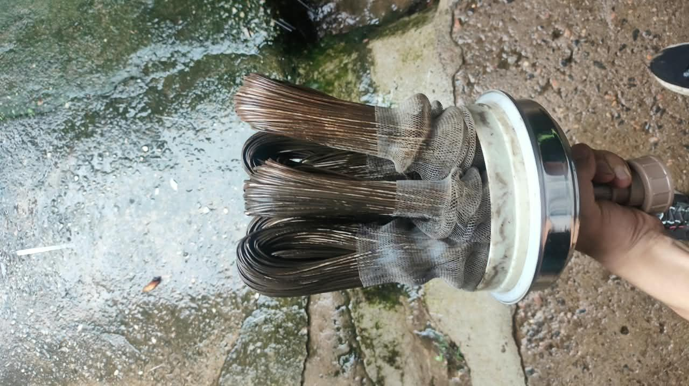
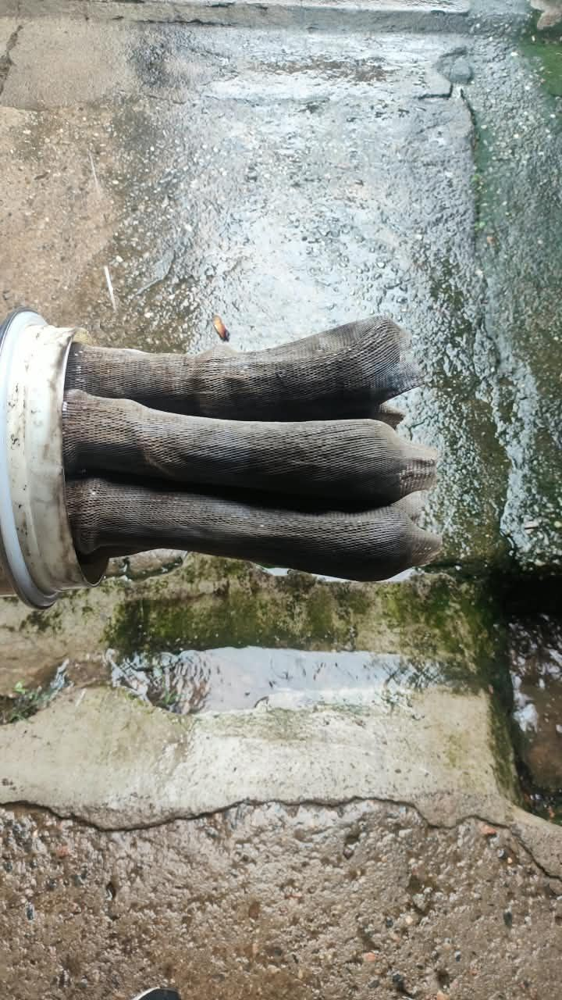
05Divergências
Divergências em aberto
Onde as fontes dizem coisas diferentes. Mostramos as versões lado a lado, sem escolher.
Máquina e montagem
| # | Tema | Versão A | Versão B | Como confirmar |
|---|---|---|---|---|
| D1 | Causa do vazamento no cabeçote da UF | (a) O-ring montado errado (Manu, 07/10). | (b) Sobrepressão deslocou o O-ring (doc de dúvidas). (c) Vazamento por a UF estar entupida (Manu, 07/10). Não se sabe se resolveu o aperto maior ou só desmontar e montar. | Resolvida (Manu, relatado pelo Rodrigo em 14/10/2026): o O-ring estava mal posicionado; com a UF entupida, a pressão subiu e o O-ring mal encaixado estourou. Bastou desmontar e remontar para o vazamento parar. Não há foto. |
| D2 | O que há na sucção | P&ID: “Poço, açude ou rio” → “Filtro para bomba” → válvula manual → Bomba 1. | Panorama de peças e histórico: no teste, a fonte era uma caixa d'água de ~1.000 L; na sucção, mangueira com lona ou tubo rígido e válvula de pé/retenção; o panorama não registra filtro na sucção. | Não há filtro antes da bomba (Rodrigo, 14/10/2026). Fonte, mangueira e válvula de pé: a confirmar com o Manu. |
| D3 | Retorno do concentrado (válvula 11) | P&ID: a linha da válvula 11 sai das UFs e volta para a sucção da Bomba 1. | Levantamento de problemas (04/10): o ponto exato de retorno da V11 não foi documentado. | Conferência da tubulação na PUC, a partir de 19/10. |
| D4 | Tanques compatíveis com a F56A1 | Fabricante (Runxin): tanques de 6" a 12". | Loja Era: tanques de 6" a 14". O vaso instalado é de 14". | Manual da F56A1 (pedido à Era). |
| D5 | Dados do filtro de disco | Fabricante (Irritec): 120 mesh = 130 µm; 10 bar a 20 °C, sem pressão mínima. | Revendas brasileiras: 125 µm; mínimo 3 bar, máximo 8 bar. Uma revenda dá 8 bar como limite a 41–60 °C. | Ficha técnica oficial do modelo. |
Pressão e bomba
| # | Tema | Versão A | Versão B | Como confirmar |
|---|---|---|---|---|
| D6 | Vazão nominal da bomba | Doc de dúvidas (contexto): “da ordem de 2.000–3.000 L/h”. | Doc de dúvidas (seção de pressão) e histórico: 3.000 L/h. | Manu: 3.000 L/h (relatado pelo Rodrigo em 14/10/2026). Etiqueta ou catálogo ainda não conferidos. |
| D7–D8 | Corte e pressão no desarme | Resolvido: corte de 4 bar, decidido em 13/10/2026. Detalhes na página Firmware. | ||
| D9 | Válvula de alívio mecânica | Semanal de 05/10: válvula de alívio de 6 bar. | Planejamento: 4 ou 6 bar, “pendente decisão” (primeiro medir, depois comprar). | Registro da decisão. Nota: a válvula de alívio saiu do pedido (ver tabela de componentes). |
Ultrafiltração e retrolavagem
| # | Tema | Versão A | Versão B | Como confirmar |
|---|---|---|---|---|
| D10 | Retrolavagem entre linhas | Doc de dúvidas: a água filtrada de uma linha faz a retrolavagem da UF da outra. | Call de 07/10: descartada a retrolavagem entre linhas com a mesma água, salvo com duas bombas ou fonte limpa. Decisão (Rodrigo, 14/10/2026): retrolavagem cruzada descartada. | Resolvida: descartada. |
| D11 | Perda de carga de ~2 m.c.a. na UF | Doc de dúvidas: ~2 m.c.a. foi a perda inicial, que aumentou até o bloqueio. | Plano do pacote (anterior): “ΔP de ~2 mca = bloqueada”. | Pressões medidas antes e depois da UF (a confirmar com o Manu). Modelo da UF: o mesmo usado pela Água Camelo, sem modelo registrado (Rodrigo, 14/10/2026). |
Água bruta e meta
| # | Tema | Versão A | Versão B | Como confirmar |
|---|---|---|---|---|
| D12 | Edição do NRC citada | PDF da água ideal: NRC (1974), Nutrients and Toxic Substances in Water for Livestock and Poultry; NASEM (2016). | Análise técnica: NRC (2000), Nutrient Requirements of Beef Cattle; ANZECC (2000). Nota “ETA convencional”: “NRC (2000): 9–23% de perdas no GMD”. | Conferir a edição citada em cada documento. |
| D13 | Meta de turbidez | PDF da água ideal: turbidez é “indicador” da Régua 2, sem valor-alvo. | Análise técnica: VMP de 5 NTU da Portaria 888 como objetivo do piloto. | Definir se 5 NTU entra como meta. |
| D14 | Faixas sem classe no PDF | Sulfato: aceitável 500–1.000; evitar > 1.500. A faixa 1.000–1.500 não tem classe. | Nitrato: aceitável 10–20; evitar > 40. A faixa 20–40 não tem classe. | Lacuna do próprio PDF. Não afeta fazenda do piloto: valores medidos muito abaixo. |
| D15 | Residual de cloro da Portaria 888 | Nota “ETA convencional”: residual de 0,2–2 mg/L. | Nota sobre cloro: mínimo 0,2 e máximo 5 mg/L de cloro livre. | Conferir o artigo da Portaria. Importa só como teto para o cloro que sobrar na entrada do bebedouro, se a remoção depois da membrana não for completa: a meta do PDF não tem valor para cloro. |
Fontes: tabela de divergências do histórico de campo v2; levantamento de problemas de 04/10/2026; análise meta × água da fazenda do piloto; notas sobre filtro de disco, cloro e ETA convencional; P&ID da máquina como montada; calls de 05/10 a 07/10/2026.
06Dúvidas
Dúvidas em aberto
O que ainda não sabemos e precisa ser resolvido antes do piloto.
- Modelo das UFs instaladasAs mesmas que o Rodrigo sempre usou na Água Camelo; modelo e fabricante não registrados, área e material da membrana desconhecidos. Sem datasheet, não se sabe se as UFs se recuperam ou precisam de troca.
- Por que a mídia escureceu a águaHipóteses registradas: montagem ou limpeza inicial, transporte dos vasos cheios (Manu, 05/10); crepina mal dimensionada ou danificada, ordem das camadas, carvão sem molho (Gabriel Poydo, 07/10). Fotos da crepina pedidas.
- Válvula, tubo e crepinas para um vaso de 14"A F56A1, as crepinas JD211/JD212 e o tubo de 3/4" são especificados para tanques de até 12" ou 13". D4
- Retrolavagem dos vasos de mídiaRetrolavagem recomendada de 3 a 4 m³/h; a bomba entrega ~1,5 a 1,7 m³/h. Recomendação do Gabriel Poydo: vazão de 2 a 2,5 vezes a de filtração.
- Perda de carga na UF~2 m.c.a. é perda inicial ou já bloqueio. D11
- Gargalo de vazãoBomba entrega ~1.500 a 1.700 L/h contra nominal de 2.000–3.000 ou 3.000 L/h; gargalo (sucção, bomba, pré-filtro ou UF) não testado. D6
- Tanque-pulmãoSe a vazão de projeto (1.120 L/h) pode ser entregue direto ao bebedouro, acionada pela boia, ou se é preciso um tanque.
- Religamento depois que a boia fechaNão definido do lado hidráulico; a lógica de controle está em Firmware.
- Água e pressão na baia do pilotoPressão, vazão e qualidade da água da rede na chegada à baia nunca foram medidas. Serão medidas no levantamento da fazenda.
- Válvula de saída redundanteA válvula 0 travou fechada; decidida em 07/10 uma 2ª válvula em paralelo. Arranjo final a definir.
- Destino do rejeitoO que fazer com a água das retrolavagens e do concentrado na fazenda do piloto.
- Composição das linhasA conferir na volta da máquina à PUC. D2 D3
- Trem do pilotoA definir com o Gabriel Poydo. Ele pediu uma análise de água mais completa (32 parâmetros, segundo a reunião de 13/10/2026) antes de fechar o processo.
Fontes: Google Doc “Yara: dúvidas de filtragem (v2)”; histórico de campo v2; calls de 05/10 a 09/10/2026; reunião semanal de 13/10/2026.
07Fontes
Fontes
De onde vem cada dado.
Laudos, notas fiscais e registros internos não são publicados aqui.
| Fonte | Usada em |
|---|---|
| PDF “A água ideal para o gado” (Wara Tech, jun/2026) | Geral e Hidráulica |
| Laudos Hidro Análise: coletas de 24/11/2025 (captação e poço) e 14/05/2026 (captação, reservatório, bebedouros A12 e I12) | Geral e Hidráulica |
| Análise meta × água da fazenda do piloto; rede de água da fazenda do piloto (relatório da visita de 10/03/2026 e status de 22/04/2026) | Geral e Hidráulica |
| Google Doc “Yara: dúvidas de filtragem (v2)”, 12/10/2026 | Geral e Hidráulica |
| Histórico de campo da Yara v2 e levantamento de problemas de 04/10/2026 | Geral e Hidráulica |
| Mapa de função das válvulas (Rodrigo, 29/09/2026) | Geral e Hidráulica |
| Notas fiscais da Era Ambiental (jul/2026, só itens), etiquetas fotografadas e catálogos de fabricante | Geral e Hidráulica |
| Identificação do filtro de disco Irritec YDV; notas sobre cloro (04/10/2026) e ETA convencional | Geral e Hidráulica |
| Vídeo da montagem de 03/10/2026 (transcrição e quadros) | Geral e Hidráulica |
| Doc público da Yara de campo | Geral e Hidráulica |
| Esquema de processo fornecido pelo David (base do diagrama da montagem original, redesenhado só com a parte hidráulica) | Geral e Hidráulica |
Também usadas: call com o Gabriel Poydo (07/10/2026); Manu (13/10/2026); reunião semanal Rodrigo e David (13/10/2026); Rodrigo (14/10/2026).